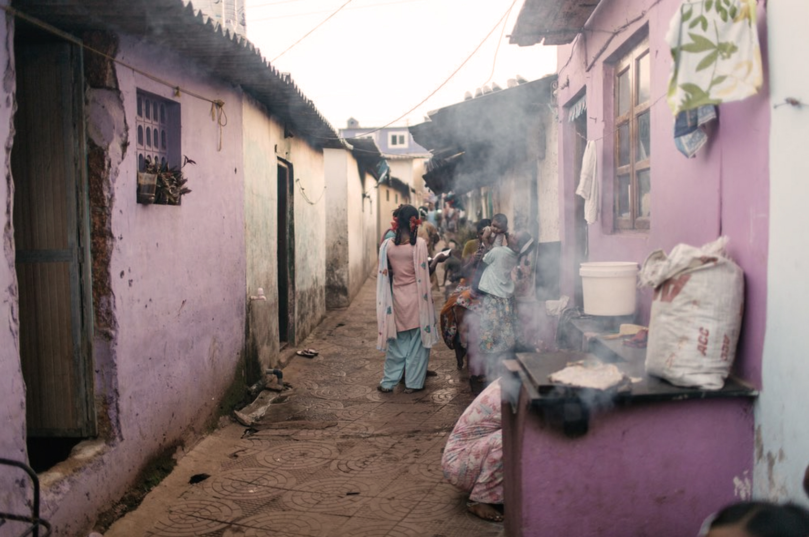

Design Challenge
Design Challenge: Updated 2/12/22
What is the problem you're trying to solve?
To empower women and children in the fight against human trafficking. I frame my design challenge in five steps; The Design Question, the Ultimate Impact, the Possible Solutions, the Context and Constraints, and the Design Question restated.